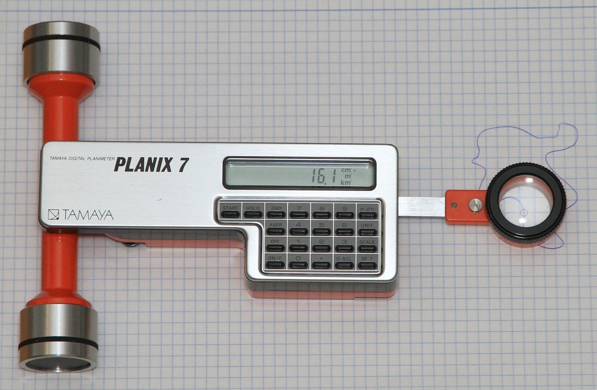

1985
Tamaya Technics Inc. (Japan)
Tamaya Planix Digital Planimeter
Trace a closed shape on a map and the machine hands you its area — a drafting gesture turned into a computed number

Trace a closed shape on a map and the machine hands you its area — a drafting gesture turned into a computed number
